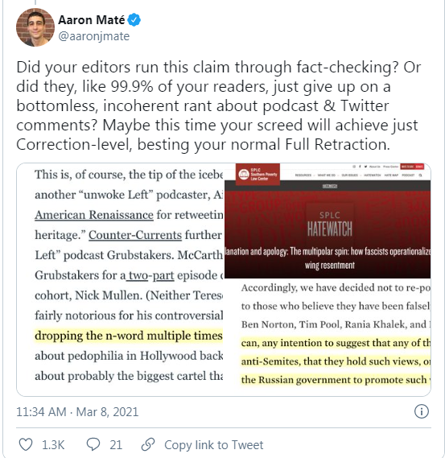
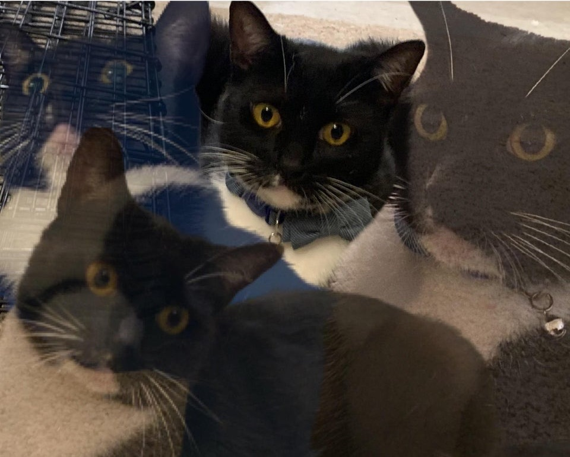

CBC Smears Boogaloo Boys.
June 24th, 2021
I found this article a year late, but I want to reprint it, since it's such a classic example of low tier propaganda.
CBC:
TDC_ARTICLE_START
An anti-government, pro-gun movement linked to recent violence in the U.S. is gaining supporters in Canada — prompting warnings from experts over their often hateful, violent remarks against protesters, police and Ottawa's new firearms restrictions.
TDC_ARTICLE_STOP
CBC Propagandist Andrea Bellemare is on the left
Ah, do you see that? "Linked to recent violence." Linked how? Linked by who? What violence? We don't know because the propagandists, Elizabeth Thompson, and Andrea Bellemare, don't bother saying. Nor do they bother giving us a link. If the Boogaloos actually comitted violence, they'd link to them being arrested. Since they don't, they just use this vague shit instead.
TDC_ARTICLE_START
In the U.S, Boogaloos have recently been in the spotlight, after some showed up heavily armed at anti-lockdown and Black Lives Matter demonstrations.
TDC_ARTICLE_STOP
The other propagandist, Elizabeth Thompson
WTF does "in the spotlight," mean specifically? What is "showed up," supposed to imply? Amateur hour here.
TDC_ARTICLE_START
That kind of support is cause for concern, say experts like Alexander Reid Ross, a postdoctoral fellow with the Centre for the Analysis of the Radical Right in Portland, Ore.
"People need very little to do a whole lot of damage," Ross said.
Ross said he started to see more activity by Canadians on sites frequented by Boogaloo supporters in the wake of the mass shooting in Nova Scotia, and the resulting tighter restrictions on firearms.
TDC_ARTICLE_STOP
(((Alexander Reid Ross)))
Ah yes, the wonderful (((Alexander Reid Ross))), your first stop for trusted news. I mean, let's just ignore the fact that even the shit-tier propaganda organization the SPLC retraced his entire archive because he's a proven liar. A guy who spends all his time online attacking anti-war leftists, and who's name is shit, even amongst the j-left. Who works with Republicans, the DHS, and DC think tanks funded by Charles Koch. Yeah that's definitely the guy you should be sourcing for your propaganda pieces.
Aaron Mate, responding to an incoherent rant by (((Reid Ross)))
TDC_ARTICLE_START
...
Another page, the K/razy Kanucks Big Kanadian Igloo, had attracted nearly 800 followers before Facebook removed it last week, following an inquiry from CBC News, saying it contravened its community standards against violence and incitement.
TDC_ARTICLE_STOP
Ah yes, nice to see that CBC news is doing inquiries on the little goy-peasants. Can't have the little people saying what they want and talking to each other now, only the Weapons of Mass Destruction Liars should be allowed to talk.
But my favourite propaganda technique they use is when they say something with the connotation that it's negative, so the NPC's who still read The Disinformation get their programming updates. As one example.
TDC_ARTICLE_START
Another post links to a story about a 26-year-old woman killed in a police shooting in Edmundston, N.B., and the line, "This is why we need guns" — a reference to Canadians defending themselves against police.
Several were critical of Prime Minister Justin Trudeau, objecting to the government's tougher gun rules or mocking his criticism of unconscious bias and anti-Black racism.
One post opposed the federal government's plan to accept more immigrants after the pandemic is over. Another criticized Chinese investors buying Canadian farmland.
TDC_ARTICLE_STOP
It's like... go on. Get to the part that's bad. But they won't, because the tactic is "wow, just wow."
TDC_ARTICLE_START
But Facebook says it is taking anything referring to the Boogaloo movement seriously.
"We continue to remove content using Boogaloo and related terms when accompanied by statements and images depicting armed violence," Facebook Canada spokeswoman Meg Sinclair said in a statement.
"We are also preventing these Pages and groups from being recommended on Facebook."
On Tuesday Facebook said it was banning all Boogaloo content.
Facebook recently lost $56 billion in market value as advertisers like Mountain Equipment Co-op, Coca-Cola and Lululemon leave over concerns it isn't doing enough to police hate speech and disinformation.
TDC_ARTICLE_STOP
But... but... I was told that corporations were purely unideological organizations that competed harshly against each other to extract tiny profits according to the free market ideology of (((Murray Rothbard))) or (((Milton Friedman))). And yet, here they are forgoing marketing just because the don't think that Facebook is doing enough to censor the filthy little goy-peasants. That's so odd. It's almost like that's not how the world works.

It's almost like that, because it is that.